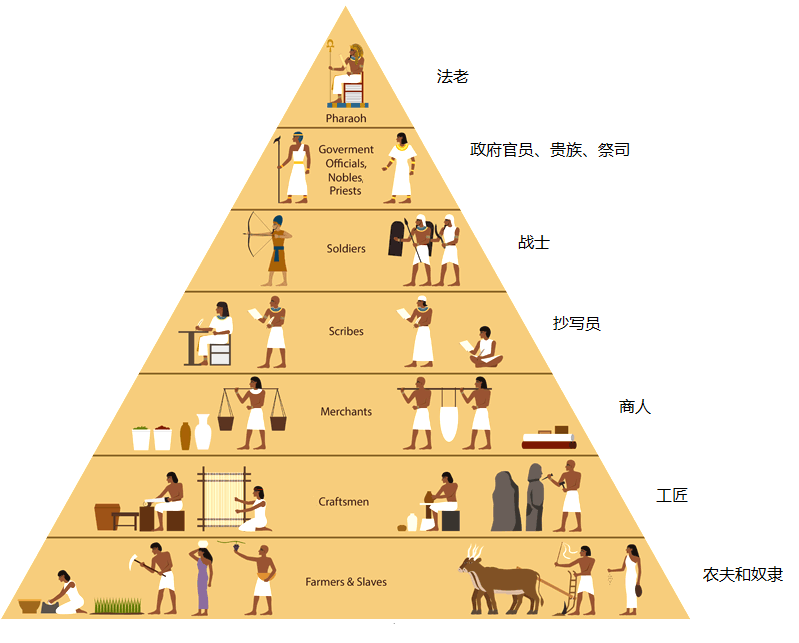

| 讀 | 默想 |
|---|---|
| 1 耶和華曉諭摩西說： 2 「看哪，猶大支派中，戶珥的孫子、烏利的兒子 比撒列，我已經題他的名召他。 3 我也以我的靈充滿了他，使他有智慧，有聰明，有知識，能做各樣的工， 4 能想出巧工，用金、銀、銅製造各物， 5 又能刻寶石，可以鑲嵌，能雕刻木頭，能做各樣的工。 6 我分派但支派中、亞希撒抹的兒子亞何利亞伯與他同工。凡心裡有智慧的，我更使他們有智慧，能做我一切所吩咐的，  古埃及社會的金字塔結構。以色列人作為奴隸位於金字塔的最底層，幾乎沒有資格當工匠 |
在古埃及，農夫和奴隸處於社會金字塔的最底層，而工匠的社會地位要高一層，所以在埃及為奴的以色列人並沒有資格當工匠，他們平時只是幹畜牧、做磚、種田等粗活（一14）。建造會幕是精緻的技術活，光是用「一塊精金錘出」（二十五36）金燈檯，就非常困難，所以今天聖殿研究所的金燈檯是澆鑄出來的。在這些缺乏經驗的百姓中，能找到足夠的人才來實現神榮耀的設計嗎？ 但神所發起的工作，神自己會負責呼召工人（2、6節），也會負責賜下所需要的恩賜（3-5節）），並且差遣聖靈來供應能力（3節），做成神「一切所吩咐的」，把神所啟示的心意完完全全地表明出來。 比撒列：「在神的庇蔭、保護之下」 亞何利亞伯：意思是「父親的帳幕」 祂旨意的成就不必倚賴任何其他的存在。因此，蒙召的人不必擔心自己是否「有智慧，有聰明，有知識」，是否「能做各樣的工」（3節），因為神自己會負責提供一切裝備。我們所應當關心的，是怎樣做好恩賜的忠心管家，因為「所求于管家的，是要他有忠心」（林前四2）。 |
| 7 就是會幕和法櫃，並其上的施恩座，與會幕中一切的器具， 8 桌子和桌子的器具，精金的燈臺和燈臺的一切器具並香壇， 9 燔祭壇和壇的一切器具， 並洗濯盆與盆座， 10 精工做的禮服，和祭司亞倫並他兒子用以供祭司職分的聖衣， 11 膏油和為聖所用馨香的香料。他們都要照我一切所吩咐的去做。」 埃及第十八王朝Nebamun墓中的壁畫，埃及工廠中的工匠正在協同工作。古埃及的工匠通常受過良好的訓練，手藝好的工匠在社會上很受尊重，生活也比較舒適 |
神所呼召的工人，神會自己負責管理，使他們能照神「一切所吩咐的去做」，既不多做、也不少做，而是不摻雜任何人意，毫不走樣地把「山上的樣式」發表出來。 每次讀到這一段都有莫名的安慰，因為即使是工匠的身份，上帝依然不吝惜提名呼召、給予各樣的才華與能力。今日的技術人員（或其他非神職人員），奉獻給神的方法，若僅剩下金錢奉獻，實在不好，需要重新被調整。 以一個被奴役的民族來說，不容易有機會深入學習埃及人精緻的建築、雕刻與製香料、香膏的工藝，因此上帝要特別表明祂的介入與揀選。在這裡比撒列記載三代家譜，亞何利亞伯也記了兩代家譜，說明神自己要賞賜智慧。 (一)有人蒙恩召作傳道，也有人作律師，更有人如比撒列或亞何利亞伯，作各樣的巧工。各人都該認清才智志向與環境都構成神的恩召；無論工商或從政，正像在教會一樣，是出於神的恩召。 (二)神給摩西計畫，也給工匠技巧從事金銀銅木工。所以每日出去工作要有信心，不怕厭倦。神既召我去作，祂必賜我力量、智慧與恩惠，是我需要認真來做。 |
| 親愛的天父上帝，祢是賜智慧的神，祢是創造的源頭。一切的技巧、工藝也來自於祢。主阿！祢按照祢的旨意呼召人來歸向祢。祢所要做的事，祢就會預備需要完成任務的工人。主啊！我感謝祢。祢呼召我來服事祢，就會賜給我所需要的智慧和能力。主阿！我願意將祢所賜的才華、能力獻給祢使用，成為一個敬拜祢的人，參與在教會各樣的事奉中。奉耶穌基督的名禱告，阿們。 | |